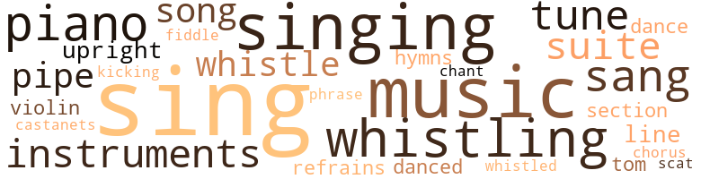
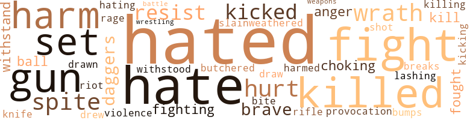

Miracles of the Red Altar Cloth (The), by Hunter, Hermann L. (1949)
127 music-related terms matched in this text.
Most frequent terms in this topic: sing (26); music (14); singing (11); piano (7); sang (6)
bones.n.01
Definition: a percussion instrument consisting of a pair of hollow pieces of wood or bone (usually held between the thumb and fingers) that are made to click together (as by Spanish dancers) in rhythm with the dance
| word | sentence |
|---|---|
| castanets | The captain directed the driver to stop at The Three Sixes and wait for him , and as he walked up to the house , in the silence of approaching dawn , his heel plates sounded like castanets , and he moved over to the grass . |
chant.n.01
Definition: a repetitive song in which as many syllables as necessary are assigned to a single tone
| word | sentence |
|---|---|
| chant | The beautiful tenor voice would make the mass chant better . |
chorus.n.01
Definition: any utterance produced simultaneously by a group
| word | sentence |
|---|---|
| chorus | All seemed to join in a single chorus , and shout , " Go home ! " |
dance.n.01
Definition: an artistic form of nonverbal communication
| word | sentence |
|---|---|
| dances | He sang for them in the evenings , and they taught him many of the newest dances , to the delight of their parents . |
| dance | After they had been introduced to all , the music started again , and the dance went on . |
dance.v.03
Definition: skip, leap, or move up and down or sideways
| word | sentence |
|---|---|
| danced | After Tony and Camilla had danced together the captain and Camilla danced , while Tony and Maryon graced the floor together . |
| danced | After Tony and Camilla had danced together the captain and Camilla danced , while Tony and Maryon graced the floor together . |
hymn.n.01
Definition: a song of praise (to God or to a saint or to a nation)
| word | sentence |
|---|---|
| hymns | " Some old hymns , Maggy . |
| hymns | For several hours they played and sang all the familiar hymns in the book , both enjoying the evening immensely . |
kick.v.04
Definition: kick a leg up
| word | sentence |
|---|---|
| kicking | " He 'll be all right when I get through with him , " put in Maryon as she went into the house and up to her room , where she jerked off her dress , turned over a chair or two , slammed down a few books , stepped on his picture , and finally fell across the bed kicking her feet , mad all over . |
music.n.01
Definition: an artistic form of auditory communication incorporating instrumental or vocal tones in a structured and continuous manner
| word | sentence |
|---|---|
| music | There will be plenty of food and wine , as well as music and dancing . " |
| music | After he had met and greeted everyone with his pumping handshake , the floor was cleared for the dancing , and as the music struck up , Tony , without invitation , began to sing in his old familiar way the songs that were dear to the hearts of lovers and loved ones , and that clear , sweet tenor voice , that was now matured and rich , seemed to just bubble and flow from his throat , as a mockingbird perched high on a twig sings to his mate at midnight . |
| music | While they sat and talked , the music struck up again , and the dancing started at full swing . |
| music | When he boarded the train , he was near to complete exhaustion , but did not realize it , his spirits were so high ; but the wheels seemed to play a form of music or harmony that put him to sleep quickly . |
| music | The music started , as the banquet tables were filled and refilled while some danced , others sang ; and from the quantity of wine and food that was spread . |
| music | " First music that has been in this house for twenty years , " said the colonel as he wiped his tear-filled eyes with his rough hand . |
| music | After the music was over , the two walked out on the lawn among the trees and shrubbery , Maggy May holding his arm and pointing out this type of plant and that bunch of roses as though she had never been ill a minute in her life , while Colonel Jim sat on the veranda watching with his heart full of joy , as it was after the Battle of Bull Run . |
| music | When they reached the Miller home , the music was in full swing and guests from everywhere were present ; but it all stopped as if by order when the Pazzo couple entered the room . |
| music | After they had been introduced to all , the music started again , and the dance went on . |
| music | Then he would go to see Camilla , and pick up his music again , and as soon as possible they would be married , and would settle down and raise a family . |
| music | Antonio Pazzo was a black-haired boy with a Shakes-perian head , well over six feet tall , with a willowy body , long arms and big feet , gifted with a voice to sing , with extraordinary talents for music . |
| music | He would face the music . |
| music | He loved music and voice , and whenever he was not busy , he stole away to the drugstore , or some place of amusement , where he could play and sing . |
| music | She knew how his mind was and how much he desired to study music and singing , but was either powerless or afraid to try to prevail against the iron will of Minto Pazzo . |
musical_instrument.n.01
Definition: any of various devices or contrivances that can be used to produce musical tones or sounds
| word | sentence |
|---|---|
| instruments | " Thanks , Sir , " he replied as he stepped up to the instruments glaring under a bright light . |
| instruments | The instruments showed the ship traveling due west ; East longitude 1I6 ; latitude 20 ' , and that they had lost a day by crossing the prime meridian . |
| instruments | An alarm was set to ring every hour so the instruments could be read and charts made . |
| instruments | His instruments showed that he was sailing almost directly over the equator , two thousand miles off his course , but he could not change it . |
| instruments | It is often warped by our own desires , and in such cases may dash our ship on unseen rocks , and leave us weeping in sorrow , condemning the guiding instruments . |
phrase.n.02
Definition: a short musical passage
| word | sentence |
|---|---|
| phrase | Just off the wharf they hailed a cab , and as the big bays trotted over the cobblestones , their feet making a sort of musical phrase , both listened with eager ears , in silent ecstasy . |
piano.n.01
Definition: a keyboard instrument that is played by depressing keys that cause hammers to strike tuned strings and produce sounds
| word | sentence |
|---|---|
| piano | He could see nothing but Camilla , and hear only tones made by some piano away off in the world he had just left . |
| piano | This time Tony was at the piano , and he chorded and sang , and the din went on until the wee hours of the morning before any were willing to stop . |
| piano | He would soon forget all about the home folks , the piano , everything , even Camilla . |
| piano | When she came in this time , she invited Tony into the parlor , where she seated herself at the piano and began to play . |
| piano | " Glad to , Mr. Pazzo , " and they went into the parlor to the piano . |
| piano | Long before he left Rizzou to study for the priesthood , he had created quite a reputation about the little village with his playing of the piano , and singing . |
| piano | People passing by who heard him never asked twice who was playing the piano and singing , for they knew it was Tony Pazzo . |
pipe.n.04
Definition: a tubular wind instrument
| word | sentence |
|---|---|
| pipe | " Well , my boy , " answered his senior , " if you notice , the smoke from my pipe blows this way , then that way , which shows that we are getting on the edge of a circular wind , and when we get in closer to the center , it will increase in velocity , maybe up to the point of a hurricane . |
| pipe | Sir John lit his pipe , stretched his short legs and said , " Well , my boy , how did you like the storm ? " |
| pipe | " What a difference a day can make , " said the colonel as he lit his pipe and blew the smoke upward . |
| pipe | " If Tony is going to leave early in the morning , we had better get to bed early ourselves , Maggy , " said the colonel as he lit his pipe . |
refrain.n.01
Definition: the part of a song where a soloist is joined by a group of singers
| word | sentence |
|---|---|
| refrains | The splash of the waves against the sides of the boat were sweet refrains , played by him and Jaquisi Palli . |
| refrains | His dreams were a mixture of sweet refrains and harsh words from vested solemn-faced teachers . |
scat.n.01
Definition: singing jazz; the singer substitutes nonsense syllables for the words of the song and tries to sound like a musical instrument
| word | sentence |
|---|---|
| scat | It made him feel good , as he sat at the window of his room , facing the East , and watched the almost full moon as it rose above the horizon , streaking the sky red , now gold , and tinting a few scat - tered clouds with crimson as they passed over its face . |
section.n.01
Definition: a self-contained part of a larger composition (written or musical)
| word | sentence |
|---|---|
| section | Papa Pazzo felt mighty good , mighty good , because this was the first of spring , and he knew it , for he had seen his first robin of the year , and in that section of the country that was a sure sign that spring had finally come . |
| section | After they left the wharf , they took the Cooper River Drive , which took them through the most beautiful section of the city . |
sing.v.02
Definition: produce tones with the voice
| word | sentence |
|---|---|
| sing | " Will you play and sing for us again , Tony , " asked Camilla , " or may you do so , since you are studying for the priesthood ? " |
| sing | After he had met and greeted everyone with his pumping handshake , the floor was cleared for the dancing , and as the music struck up , Tony , without invitation , began to sing in his old familiar way the songs that were dear to the hearts of lovers and loved ones , and that clear , sweet tenor voice , that was now matured and rich , seemed to just bubble and flow from his throat , as a mockingbird perched high on a twig sings to his mate at midnight . |
| sings | After he had met and greeted everyone with his pumping handshake , the floor was cleared for the dancing , and as the music struck up , Tony , without invitation , began to sing in his old familiar way the songs that were dear to the hearts of lovers and loved ones , and that clear , sweet tenor voice , that was now matured and rich , seemed to just bubble and flow from his throat , as a mockingbird perched high on a twig sings to his mate at midnight . |
| sang | He sang on and on until the entire crowd was in a pandemonium of hysterical joy . |
| sang | This time Tony was at the piano , and he chorded and sang , and the din went on until the wee hours of the morning before any were willing to stop . |
| sing | He said it so loud that his mother , who had been dozing , awoke and said , " I love to hear you sing , Tony , you have such a good voice . " |
| sing | He was that minute an experienced merchant , getting rich , and he became so noisy that Mama aroused , and wanted to hear Tony sing . |
| sing | Maybe some Sundays he would sing the Ave Maria while his assistant read mass . |
| sing | " Are you going to sing , Tony ? |
| singing | Tony has been singing too much , now . " |
| sing | Mama , who listened very quietly , finally put in , " Tony , wo n't you sing before you go ? |
| sing | " Yes , Mother , I will sing for you when I come back , " and he kissed her on the cheek . |
| sing | " And Tony can sing , he has a good voice , " joined in Mama . |
| singing | Whistling and singing Negroes under cruel mates were used to do this work , and they were often beaten with whips at the least provocation . |
| sing | I liked to hear him sing . " |
| sing | Will you sing for me ? |
| sing | " Sure , mother dear , I will sing for you any time you want me to . " |
| sing | When are you going to sing ? |
| sing | Even Camilla 's father seemed to be satisfied , for every night he was over with his violin , and they teamed together to the greatest enjoyment of Mama , who liked to hear Tony sing . |
| sing | She was satisfied ; she had heard him sing . |
| sing | When Tony kissed his mother , she was seemingly much better physically than when he left , and she wept aloud , telling him how much she had missed him , and how glad she was to see him , and asked him to sing . |
| sing | " I will sing for you every day while I am home . " |
| sing | " Will you be able to sing in that big house , Tony ? " inquired Mama . |
| sing | When he reached home , it was almost bedtime , but he found his mother still waiting up for him to sing , and after he kissed her , he played and sang several of her favorite pieces , and her very soul seemed to glow with delight as she hummed with him . |
| sang | When he reached home , it was almost bedtime , but he found his mother still waiting up for him to sing , and after he kissed her , he played and sang several of her favorite pieces , and her very soul seemed to glow with delight as she hummed with him . |
| sing | Wo n't you always sing for me ? " |
| sing | " Yes , Mother , I like to sing for you , you are so dear . " |
| sang | The music started , as the banquet tables were filled and refilled while some danced , others sang ; and from the quantity of wine and food that was spread . |
| sing | With his beautiful tenor voice , Tony began to sing as he walked over beside her , as though they had known each other forever . |
| sing | " I will sing if you will play , Miss Mitchel , " spoke up Tony , as he smoothed his hair with both hands . |
| sang | For several hours they played and sang all the familiar hymns in the book , both enjoying the evening immensely . |
| sang | He sang for them in the evenings , and they taught him many of the newest dances , to the delight of their parents . |
| sing | Antonio Pazzo was a black-haired boy with a Shakes-perian head , well over six feet tall , with a willowy body , long arms and big feet , gifted with a voice to sing , with extraordinary talents for music . |
| sing | He loved music and voice , and whenever he was not busy , he stole away to the drugstore , or some place of amusement , where he could play and sing . |
| sing | It seemed so much easier to play and sing , and have the gang around , than to be cloistered away behind dark gray walls , poring over books centuries old . |
singing.n.01
Definition: the act of singing vocal music
| word | sentence |
|---|---|
| singing | He had done all of his playing and singing away from home ; in fact , most of the practicing had been done at the home of Camilla Palli , whose people were musically inclined , and admired the musical ability of Tony very much . |
| singing | " I enjoyed Tony 's singing , he has a good voice , " proclaimed Mama . |
| singing | " Do n't start that singing business , Mama , " remarked Papa . |
| singing | When the married couple stepped out into the warm sunlight , they were so absorbed in each other that they did not hear the birds singing in the trees , nor did they notice the beauty in the bright sunlight . |
| singing | The night of Christmas Eve , while everybody was celebrating and drinking wine , and singing to the Christ child , Antonio secluded himself in his quarters , downhearted and blue , and maybe homesick , and wrote the second letter to Camilla . |
| singing | Then he thought of last Christmas Eve , and all about his playing and singing with her so near to him , and those brown eyes that seemed never to show anything but love , and he wondered who was gazing into them now . |
| singing | Long before he left Rizzou to study for the priesthood , he had created quite a reputation about the little village with his playing of the piano , and singing . |
| singing | People passing by who heard him never asked twice who was playing the piano and singing , for they knew it was Tony Pazzo . |
| singing | She knew how his mind was and how much he desired to study music and singing , but was either powerless or afraid to try to prevail against the iron will of Minto Pazzo . |
song.n.01
Definition: a short musical composition with words
| word | sentence |
|---|---|
| song | Every day for two weeks he had been up early in the morning , walking through the gardens and groves , along the branches and creeks , trying to be the first one in the family to see and hear the song of the male robin in the land . |
| songs | After he had met and greeted everyone with his pumping handshake , the floor was cleared for the dancing , and as the music struck up , Tony , without invitation , began to sing in his old familiar way the songs that were dear to the hearts of lovers and loved ones , and that clear , sweet tenor voice , that was now matured and rich , seemed to just bubble and flow from his throat , as a mockingbird perched high on a twig sings to his mate at midnight . |
| songs | He hummed a few songs that came across his mind , while at his post . |
| song | Mama was content with one song a day , and asked for nothing more . |
suite.n.01
Definition: a musical composition of several movements only loosely connected
| word | sentence |
|---|---|
| suite | When they arrived at the Hotel Genova , it was already dark , and as they entered the elevator the porter called to the elevator girl , " Bridal suite , please . " |
| suite | Tony smiled , and Camilla looked surprised , for he had not told her that he had engaged that suite the day he purchased the rings . |
| suite | After they had eaten supper at one of the fashionable restaurants , they walked about the busy thoroughfares , admiring the beautiful displays in the windows until their feet began to hurt , then they returned to their suite for the night . |
| suite | In the afternoon they attended a show , after which they had dinner , then went directly to their suite for their last night before their separation , for the Judy was to sail tomorrow at high tide . |
| suite | The loneliness settled around Tony like a heavy fog as the sun went down and darkness began to cover all , for it made him think of the blue and pink beds that were in his bridal suite . |
tenor_drum.n.01
Definition: any of various drums with small heads
| word | sentence |
|---|---|
| tom-toms | Even when he began to feel sleep slipping over him , he could still hear the parting words of Camilla ringing in his ears , like tom-toms in the distance , and they disturbed him . |
tune.n.01
Definition: a succession of notes forming a distinctive sequence
| word | sentence |
|---|---|
| tune | There was quiet for a while , during which time cake and iced sweets were served ' by the younger boys and girls , and those in love paired off in couples , some on the porch , and some out in the yard , for there was a full moon shining high up in the sky , like a noonday sun , and everything was in tune for love-making . |
| tune | Even the sun was beautiful ; the dust was soft underfoot ; the sky bluer ; the breeze softer ; the whole world was in tune with his mind . |
| tunes | Lilting tunes and parties are for the shallow . |
| tunes | Tony could see them change their tunes after his first visit home . |
| line | He must set out to find her as soon as possible , so he formed his line of attack as he lay on his soft bed before he went to sleep . |
| tune | She was dressed in a military form-fitting gray gabardine dress , displaying the Confederate flag colors for a belt , with a colonel-shaped hat perched on her blonde hair that was in tune with the season and the day . |
| line | And as he saw the long line of images , ever growing smaller , until the last one seemed miles away , he was startled , for it resembled Camilla , and he was afraid , for it suddenly dawned upon him that she might be married , or was about to be , and his return home might be a wild-goose chase , or something worse . |
| line | As he lay on the bed , he formulated a line of attack for his brother , for he knew that he was not aware of his love for Camilla . |
upright.n.02
Definition: a piano with a vertical sounding board
| word | sentence |
|---|---|
| upright | The howling wind , the roll of thunder after each flash of lightning , the crying and moaning of the timbers of the Judy as they strained to keep her upright , the roar of the sea as the waves beat their fists against the hull in angry passion , and above all this , the captain shouting , " Cut away the mast ! " |
| upright | The howling wind and the crying of the timbers as they strained to keep upright in the terrible gale created such a din that he felt as though his entire body would collapse under the strain . |
| upright | His head seemed to be easy to hold upright , and his shoulders were broad and strong . |
violin.n.01
Definition: bowed stringed instrument that is the highest member of the violin family; this instrument has four strings and a hollow body and an unfretted fingerboard and is played with a bow
| word | sentence |
|---|---|
| violin | I will come early - and what about dad and his violin ? " |
| violin | Even Camilla 's father seemed to be satisfied , for every night he was over with his violin , and they teamed together to the greatest enjoyment of Mama , who liked to hear Tony sing . |
| fiddle | Now she was through ; she was ready to hang up the fiddle and the bow . |
whistle.n.01
Definition: the sound made by something moving rapidly or by steam coming out of a small aperture
| word | sentence |
|---|---|
| whistling | Then he listened to the whistling of the wind through the torn sails and the splashing of the waves against the rocky shore . |
whistle.v.01
Definition: make whistling sounds
| word | sentence |
|---|---|
| whistling | Pluto , a huge Negro , almost as large as the captain himself , bowed and took the order for two , and disappeared whistling . |
| Whistling | Whistling and singing Negroes under cruel mates were used to do this work , and they were often beaten with whips at the least provocation . |
| whistle | Above the whistle of the wind could be heard , in the distance , the rumble of thunder . |
| whistling | The wind was still whistling and the ship 's riggings were still groaning . |
| whistled | Her name and address he did not tell Camilla , but when she told him that she was going to live at The Three Sixes , which belonged to her husband , he whistled as though surprised , and said , " Some mansion ! |
| whistling | The first person he met was Cleto , bringing fresh milk into the dining hall , and he seemed to be as fresh as a daisy , for he was whistling even that early in the morning . |
| whistling | When the fresh morning air struck his face , for he was out early , and as usual he met Cleto with his pail of milk , whistling as he walked toward the dormitory , it made him feel better ; only , somewhere in the back of his consciousness , lay the faint images that had appeared to him in his sleep . |
| Whistling | Whistling and happy , wherever he was . |
| whistling | The first person he saw was Cleto , coming toward him whistling , with a bucket of milk in his hand . |
| whistle | As Antonio watched him disappear around the bend , he thought , What a life , no responsibilities , just live from day to day , and whistle . |
| whistle | Cleto was now out of sight , and as he jumped from the platform to look for Cleto , he heard the brassy sound of the train whistle , and looking around , he saw the streak of black smoke in the distance , and he knew again that he must go home , no matter what happened later . |
| whistle | Maybe I ought to whistle a little , like Cleto . |
107 violence-related terms matched in this text.
Most frequent terms in this topic: hated (14); hate (7); fight (6); killed (5); spite (4)
aggravation.n.02
Definition: unfriendly behavior that causes anger or resentment
| word | sentence |
|---|---|
| provocation | Whistling and singing Negroes under cruel mates were used to do this work , and they were often beaten with whips at the least provocation . |
anger.n.01
Definition: a strong emotion; a feeling that is oriented toward some real or supposed grievance
| word | sentence |
|---|---|
| anger | " Yes , worse than that , " replied Camilla , getting up , her face white with anger . |
| anger | As dawn broke next morning , every cloud had passed from the sky , and the results of nature 's anger were seen on every side . |
battle.v.01
Definition: battle or contend against in or as if in a battle
| word | sentence |
|---|---|
| battle | Now he knew , and possessed , two great powerful weapons to battle the future enemies of life . |
bump.n.01
Definition: a lump on the body caused by a blow
| word | sentence |
|---|---|
| bumps | One of the new sailors that we took on in Genoa broke out with it this morning , and you ca n't put a pin between the bumps on his body , they are so thick . " |
butcher.v.01
Definition: kill (animals) usually for food consumption
| word | sentence |
|---|---|
| butchered | about their work with understanding , and gathered in great quantities of food , such as beans , potatoes , fruits , wine , molasses , sugar , butchered hogs and cattle , until every available inch of space was filled . |
dagger.n.01
Definition: a short knife with a pointed blade used for piercing or stabbing
| word | sentence |
|---|---|
| daggers | As he looked down that trail , it seemed very long , and crooked , overhung with many fierce daggers ready to fall on his head , if he faltered for just a moment too long . |
| daggers | As the new year came into its own , most of the fellows spoke of their new resolutions , and how hard they would work to keep them , and Antonio never raised his head , trying to avoid the gaze of the wondering eyes that pierced him like hot daggers , thrown all at once . |
defy.v.01
Definition: resist or confront with resistance
| word | sentence |
|---|---|
| withstood | All buildings were constructed of massive stones , that had withstood the wear of time for several centuries . |
| withstand | But he suddenly remembered his early training while in the monastery concerning the mastery of mind over body , and he was consoled , and rode easier , hoping that he would be able to withstand whatever passed through his mind . |
| withstand | The darts were pinned in , and they seemed to explode inside of his brain , creating an intense heat that he could not withstand . |
draw.v.23
Definition: pull (a person) apart with four horses tied to his extremities, so as to execute him
| word | sentence |
|---|---|
| draw | But as he thought , his heart seemed to draw up into a small ball , not large enough to sustain life . |
| drew | The captain lighted one of his cigars , and drew up to the table facing Tony . |
| drawn | I treated him as if he were my father , and all of this was before I ever dreamed of a place like The Three Sixes , and that deed was drawn up , signed and witnessed six months before I even saw the place , and the first day I went there , he introduced me to the servants as their boss . " |
fight.n.05
Definition: a boxing or wrestling match
| word | sentence |
|---|---|
| fight | Christina watched every move of both Tony and Camilla throughout the afternoon , and wondered how either of them could possibly keep up the fight against fate , with love so far overdue . |
| fight | Yet down in his heart he knew the fight was not over , even though he was master of himself . |
fight.v.02
Definition: fight against or resist strongly
| word | sentence |
|---|---|
| fight | He was growing stronger by the minute , and he was getting ready to step out into the cold cruel world , away from the protection of home and friends , to fight it out , tooth and nail , for a place among men . |
| fight | Everyone seemed to like him very much , and was ready to fight for him if necessary . |
| fighting | They seemed to be on the outer border of the storm , with the wind blowing at the stern , which gave them a great push , causing the Judy to cut through the surf at a ferocious speed , with her canvass flapping as though it were mad , and fighting back at some terrible foe . |
| fighting | The squeaking of the rats fighting over the dead bodies could be heard all through the day and night . |
| fought | He was killed in the Battle of Gettysburg the third day , but they say he was game to the core , fought to the last . |
| fought | That 's the way all us Mit-chels fought , " and he seemed to be in some sort of a happy trance . |
| fight | " Well , I ca n't fight the whole world , that is one thing sure , " replied Captain Hightower , and he backed out of the door and tipped his hat good morning . |
| fight | Soldiers to fight my battles , and a shield of consecrated cloth . |
fracture.n.01
Definition: breaking of hard tissue such as bone
| word | sentence |
|---|---|
| breaks | " Thank you , Mrs. Pazzo , " he replied , " I have had breaks already , but I will sit down a few minutes and look at the paper while you finish your breakfast , " and he took the morning paper out of his coat pocket . |
fury.n.01
Definition: a feeling of intense anger
| word | sentence |
|---|---|
| rage | The announcer was in a rage , claiming that Tony had used some trickery to tame the bull , and called the police to have him searched . |
gag.v.06
Definition: cause to retch or choke
| word | sentence |
|---|---|
| choking | He was choking . |
| choking | He also knew that if he had consulted them about quitting school , they would never have consented , for they had built up the priest complex until it was not only their hope , but the talk of the town : As he drew near the gate which was held shut by a weight on a chain , again his heart skipped , and it seemed to fill his chest to bursting , and it crowded up into his throat until he had to cough to relieve the choking . |
gun.n.01
Definition: a weapon that discharges a missile at high velocity (especially from a metal tube or barrel)
| word | sentence |
|---|---|
| guns | He rushed to see what was going on , for the sound of the guns came from down the stream where Jim had taken the horses to graze before dark . |
| gun | There were twelve heavily armed men , of big stature , and before Tony could intervene , they knocked Jim 's brains out with the butt of a gun because he would not tell where the gold was . |
| guns | As soon as they saw him they leveled their guns on him , but did not shoot , for the leader shouted something to them and walked up and said in broken English , " Tony , where is the money ? " |
| guns | " Have your men put their guns down then ; they make me nervous . " |
| guns | The leader gave a command , and they lowered their guns , and Tony motioned for them to follow , and he led them to the gold , which was in two saddlebags stuck under a log . |
harm.v.01
Definition: cause or do harm to
| word | sentence |
|---|---|
| harmed | Wherever he stopped , he was soon a favorite ; and he always left without having harmed anyone , and with the highest respect of all . |
hate.v.01
Definition: dislike intensely; feel antipathy or aversion towards
| word | sentence |
|---|---|
| hate | " I hate to think of such drastic plans , but I am forced to fol - low such a course by circumstances I am not able to alter . |
| hated | She also said she hated to see him go . |
| hate | She was easier to love than to hate , and I must say she gave me full measure of her love , without reservation . |
| hated | It was sweet to inhale , and when he filled his lungs with it , he hated to let it go . |
| hated | When the carriage pulled up in front of the house to take them down to the wharf , Tony stood for several minutes shaking hands with the servants , for all of them liked him very much , and hated to see him go , but he assured them that he would return and bring his wife with him . |
| hated | He hated to give her up , and he was delighted to say farewell . |
| hated | She hated to think that in a few days she would land and have to say good-bye to him , he had been so nice . |
| hated | And she was a blonde , and she hated all women with white hair , she continued to think , and in an undertone , she said out loud , " I would n't trust her for one minute , she acts like a cat . " |
| hated | Something seemed to tell her that a serious accident had happened to Tony , and she hated to think about it , and something seemed to tell her that she had better hang on to Captain Hightower , for she might need him , and she hated to think about that also . |
| hated | Something seemed to tell her that a serious accident had happened to Tony , and she hated to think about it , and something seemed to tell her that she had better hang on to Captain Hightower , for she might need him , and she hated to think about that also . |
| hate | As they walked up the path toward the great mansion , Captain Hightower took her by the arm and said , " I hate to go to sea and leave you here . |
| hated | She hated her , and that went for all blondes . |
| hate | " I would like to get married as much as you , Captain , for I hate to see you go . |
| hate | I hate to see him go . " |
| hated | Captain hightower remained in Rizzou for several days trying to get better acquainted with the Palli family , and the longer he stayed the more Tony 's people hated him . |
| hates | " She hates me , as I guess you know by this time ; but it 's not my fault that Tony was lost . " |
| hate | I hate both of you , " and Maryon jumped up and slammed the door behind her as she went out , hurrying to get into her waiting cab , which drove away splattering mud in its tracks . |
| hated | At first she hated them both ; after a few days , she found herself hating only Camilla . |
| hating | At first she hated them both ; after a few days , she found herself hating only Camilla . |
| hate | I hate both of you ! " and she ran into the house and slammed the door , never even looking back to see what they did . |
| hated | The study of astronomy had not lessened his curiosity , but had sharpened it until he always hated to see them give away to the sun , and always admired the last few stars that hung on , defying broad daylight . |
| hated | As he sat there in silent meditation , facing the cathedral from which he had just come , he felt his spirits fall , and he hated the fact that he was leaving . |
| hated | He hated it . |
hurt.v.04
Definition: cause damage or affect negatively
| word | sentence |
|---|---|
| hurt | Maybe he would not like it , and then the captain would be hurt . |
injury.n.01
Definition: any physical damage to the body caused by violence or accident or fracture etc.
| word | sentence |
|---|---|
| harm | " Yes , Tony , " she answered , " but I did not answer them because I thought it would do you harm . |
| harm | It was different this time , for now he was a hardened seaman , and the rocking did him good instead of harm . |
| harm | She had been nice to him when he was at home , and he could see no harm in writing her just one letter . |
| harm | She had begun to feel that there was no harm in trusting him until her husband came . |
kick.v.04
Definition: kick a leg up
| word | sentence |
|---|---|
| kicking | " He 'll be all right when I get through with him , " put in Maryon as she went into the house and up to her room , where she jerked off her dress , turned over a chair or two , slammed down a few books , stepped on his picture , and finally fell across the bed kicking her feet , mad all over . |
kick_back.v.02
Definition: spring back, as from a forceful thrust
| word | sentence |
|---|---|
| kicked | " What a relief that everything went off in fine style , " sighed Christina , as she kicked off her too tight shoes . |
| Kicked | Kicked out by Camilla , and refused by Maryon . |
| kicked | The bed , the next morning , showed evidence of a mighty struggle between mind and body ; it was kicked to pieces . |
kill.v.10
Definition: cause the death of, without intention
| word | sentence |
|---|---|
| killed | Francis is dead ; he got killed in the winery a few days after you left . |
| killed | " You were only a few days out to sea when the terrible accident happened to Francis , the shock of which almost killed me , but I managed to live through it on account of my love for you . |
| kills | He was succumbing to something invisible , but yet it existed , like a great malady floating in the bloodstream that kills slowly and very silently . |
| killed | A crew of sixty-eight all gone , killed by the dreaded smallpox . |
| killing | He only hoped that she would wreck herself by striking the land , and not strike some other ship , probably killing some innocent people . |
| killed | He was killed in the Battle of Gettysburg the third day , but they say he was game to the core , fought to the last . |
| kill | Now and then he gave Marandy orders to kill the fatted calf , for a feast was in order . |
| killed | By the next morning he was fully conscious , and was very sad when he was told that his guide had been killed and both horses when the storm blew away the church . |
knife.n.02
Definition: a weapon with a handle and blade with a sharp point
| word | sentence |
|---|---|
| knife | " Did you get enough to eat , Tony ? " asked the colonel when he saw him cross his knife and fork and push his chair back from the table . |
malice.n.01
Definition: feeling a need to see others suffer
| word | sentence |
|---|---|
| spite | Anyway , he was too sick to stand up at sailing time , in spite of the black coffee he tried to drink at the suggestion of Sir John and Buco . |
| spite | After dinner , Marvon showed Captain Hightower theater tickets , and all made preparations to go , in spite of his excuse of being tired and needing rest . |
| spite | Their good-night kiss was warm , in spite of the arguments . |
| spite | " In spite of all his faults , l like him , " spoke Mr. Miller . |
murder.v.01
Definition: kill intentionally and with premeditation
| word | sentence |
|---|---|
| slain | Robbers never attacked at sea , while on land his excellent servant had been slain and his fortune stolen . |
musket_ball.n.01
Definition: a solid projectile that is shot by a musket
| word | sentence |
|---|---|
| ball | But as he thought , his heart seemed to draw up into a small ball , not large enough to sustain life . |
| ball | I stopped a Yankee minnie ball with my left leg . |
pain.v.02
Definition: cause emotional anguish or make miserable
| word | sentence |
|---|---|
| hurt | To Mama he gave a pair of Indian-made moccasins for her tender feet that had hurt her all of her life . |
| hurt | The colonel , who was hurt almost as much as Maggy May was , cleared his throat and went into the house , patting his daughter on the shoulder as he passed . |
| hurt | I am also sorry that I have decided to go home , for your sake , and I will grieve much when we have separated , and distance will hurt me every time my face is turned your way . " |
resist.v.04
Definition: withstand the force of something
| word | sentence |
|---|---|
| resist | He feared to look out , and he feared to resist . |
| resist | As the darkness began to settle silently over the fields and lawn , fireflies seemed to resist nature 's efforts , for the air was full of on-and-off flashes . |
| resist | As she stood there gazing , an urge to go to him swept over her so strong that she was powerless to resist it , and she walked stealthily toward his bed , which was lit up by the almost constant flashing of the lightning . |
rifle.n.01
Definition: a shoulder firearm with a long barrel and a rifled bore
| word | sentence |
|---|---|
| rifle | It was his rifle range . |
riot.n.01
Definition: a public act of violence by an unruly mob
| word | sentence |
|---|---|
| riot | " Maryon , you do n't mean it ? " shouted both in unison , and all three went into a riot of joyous shouting , but the captain did not know it . |
shoot.v.02
Definition: kill by firing a missile
| word | sentence |
|---|---|
| shot | When he came to the scene , the three horses had been shot , and some men were beating Jim terribly , trying to make him tell where the gold was . |
sic.v.01
Definition: urge to attack someone
| word | sentence |
|---|---|
| set | Tony watched her disappear through the door like an angel clothed in gold ; and , his mind filled with overpowering love , set on fire by the glow from her body , he staggered up the stairs and collapsed on his bed , not knowing what he was doing . |
| set | He saw beautiful ships from India , China , Africa and Turkey , and he was of a mind to go aboard and try to get on , but his mind being set on America , his feet just would n't stop . |
| set | brain very far for there were too many new ideas there now , and his mind was all set on new and bigger things . |
| set | She was set on that . |
sting.n.03
Definition: a painful wound caused by the thrust of an insect's stinger into skin
| word | sentence |
|---|---|
| bite | And on these sweet grapes he feasted for hours , enjoying every bite . |
violence.n.01
Definition: an act of aggression (as one against a person who resists)
| word | sentence |
|---|---|
| violence | For one half hour the boiling increased in violence and the next half hour it diminished . |
weapon.n.01
Definition: any instrument or instrumentality used in fighting or hunting
| word | sentence |
|---|---|
| weapons | Now he knew , and possessed , two great powerful weapons to battle the future enemies of life . |
weather.v.01
Definition: face and withstand with courage
| word | sentence |
|---|---|
| brave | " It takes a brave man to say that , Tony , " and she placed her hands on his bowed head , kissed his forehead , and said , " You will come out all right . |
| brave | Camilla got up and crossed over to his side , and kissed him on the forehead , and said , " Tony , you are a brave boy . |
| weathered | But Tony was used to storms , for the Judy had weathered the worst that ever blew over the briny deep . |
whip.v.04
Definition: strike as if by whipping
| word | sentence |
|---|---|
| lashing | If any of them hesitated , or seemed to scowl as they grudgingly turned over their pay envelope , they received a good tongue lashing , and maybe the few cents that Papa used to give each one to spend was strictly withheld , and a terrible scene created at the table . |
wrath.n.01
Definition: intense anger (usually on an epic scale)
| word | sentence |
|---|---|
| wrath | Then they prayed as the storm raged outside , fearing the wrath of the gods . |
| wrath | " Do you think that is why it stormed so last night - maybe the wrath of the gods ? " asked Camilla as she looked him square in the eyes , unsmiling . |
| wrath | " Well , I do n't know why it stormed , neither do I know who invoked the wrath of the gods ; but there is one thing I do know and that is , our love must not be broken up by yesterday 's brawl . " |
| wrath | As he rode away , the roadsides for miles showed evidence of the wrath of the gods ; broken limbs , uprooted trees , and many buildings were scattered far and wide . |
wrestle.v.01
Definition: combat to overcome an opposing tendency or force
| word | sentence |
|---|---|
| wrestling | The trees , that seemed to be tired of wrestling with the wind , held their leaves still , except for a quiver now and then as a gust , left be - hind by the main storm , moved gently through them . |
136 religion-related terms matched in this text.
Most frequent terms in this topic: prayers (21); Jerusalem (17); church (12); cathedral (8); heaven (7)
blessing.n.05
Definition: the act of praying for divine protection
| word | sentence |
|---|---|
| blessing | " You are the greatest blessing that has ever come to me , " remarked the colonel . |
| blessing | Mass was attended early , and Tony was given the priest 's blessing afterward . |
| blessing | But both thought that their lives would be better , for a priest in a family was thought to be the highest blessing a family could receive , and surely they would receive many blessings for this earthly sacrifice . |
| blessings | But both thought that their lives would be better , for a priest in a family was thought to be the highest blessing a family could receive , and surely they would receive many blessings for this earthly sacrifice . |
cathedral.n.02
Definition: the principal Christian church building of a bishop's diocese
| word | sentence |
|---|---|
| cathedral | There were six great dormitories , flanking three on a side the high-domed cathedral in the center foreground . |
| cathedral | The windows in the cathedral were made of brilliantly stained glass , and were hung on heavy rollers , so they could be swung open to let the breezes blow through , or let in the sunlight . |
| cathedral | The statuary in the cathedral was very beautiful , strongly made and handsomely carved . |
| cathedral | Many pilgrimages were made to this cathedral from all over the world just to touch this red cloth , as it was thought to give good luck , and might heal the sick where the faith was strong enough . |
| cathedral | After leaving the cathedral , he walked about the grounds , trying to acquaint himself with everything , his mind already having been made up , to make the best of his opportunities , to be a priest . |
| cathedral | When he came to the steps in front of his dormitory , he did not stop as usual and visionize , but walked quickly and stealthily to the back entrance of the cathedral , which was always left open for monks to enter at all hours to pray . |
| cathedral | So with renewed courage , he tiptoed through the door and down to the altar , genuflected , took the shears from his pocket , and snipped a piece of the red altar cloth , about two feet square , thrust it into his bosom , genuflected again , and crept out of the cathedral and made his way swiftly to the dormitory and up to his room . |
| cathedral | As he sat there in silent meditation , facing the cathedral from which he had just come , he felt his spirits fall , and he hated the fact that he was leaving . |
catholic.n.01
Definition: a member of a Catholic church
| word | sentence |
|---|---|
| Catholic | Everyone that was old enough was scurrying around , trying to get ready for early mass , which was held only four times on Sundays in that Small village - 6 a.m. , I : 30 a.m. , 9 a.m. and 10:30 a.m. , and since the family had been well drilled in the Catholic faith , no one wanted to be late , or under any condition , to miss . |
| Catholics | Both were desirous of helping Antonio in every way that they could , and the vows were taken with such sincerity as only true Catholics can understand . |
chant.n.01
Definition: a repetitive song in which as many syllables as necessary are assigned to a single tone
| word | sentence |
|---|---|
| chant | The beautiful tenor voice would make the mass chant better . |
christendom.n.01
Definition: the collective body of Christians throughout the world and history (found predominantly in Europe and the Americas and Australia)
| word | sentence |
|---|---|
| Christianity | The chief was so much pleased by his wonderful work that he offered Tony his wife , or any squaw among them , but Tony told him that he had one wife and that was enough , according to the Christian faith ; and he remained a few days more , teaching the chief the ways of Christianity . |
church.n.02
Definition: a place for public (especially Christian) worship
| word | sentence |
|---|---|
| church | A priest has charge of a church , with its congregation ; he must guide it spiritually to the end of life so it will make the port of heaven . |
| church | After three weeks of parties and preparations , the wedding was finally solemnized at nine forty-five , June 28 , 1881 , in St. John 's Church , with the hour hand on the upstroke - for it was thought to be bad luck if the hour hand was on the downstroke - with the church crowded with relatives and friends . |
| church | The rays of the rising sun came in through the branches of the trees that surrounded the church , and trickled through the windows like so many fiery darts shot by the bow of Cupid , and struck deep into the hearts of Tony and Camilla , who , though solemn , had expressions of extreme contentment and satisfaction as they said , " I do . " |
| church | Papa and Mama allotted so much for food , clothing , wine and the church ; and Papa always had to have just a little for beer , which he was deserving of for being the father of such a large family . |
| church | So before the entire family , before anyone could go to church , Papa , with lots of gusto , told them about his revelation . |
| church | While the banns were being read in church , time seemed to drag , and every day seemed a year . |
| church | They met the Fourth of July storm , and it was so severe that they were forced to take refuge in an old church near the roadside . |
| church | At the height of the storm , while the lightning flashed almost continuously and the roll of the thunder was almost deafening , the rickety old church gave way and flew into a thousand pieces , knocking Tony senseless . |
| church | By the next morning he was fully conscious , and was very sad when he was told that his guide had been killed and both horses when the storm blew away the church . |
| church | Papa was a great man today at church and on the streets . |
| church | Papa tried to set everyone straight , and laughed at such idle talk , and said : " Antonio will be gone twelve years , and when he returns , will be an ordained priest , and when he comes home , will have charge of the church , right here in Rizzou . " |
| church | He developed a fear of the church , and was afraid to pass by St. John 's after dark , as something seemed to haunt him as long as he was within sight of its high walls . |
church.n.04
Definition: the body of people who attend or belong to a particular local church
| word | sentence |
|---|---|
| Church | After three weeks of parties and preparations , the wedding was finally solemnized at nine forty-five , June 28 , 1881 , in St. John 's Church , with the hour hand on the upstroke - for it was thought to be bad luck if the hour hand was on the downstroke - with the church crowded with relatives and friends . |
| Church | No time was lost in getting plans ready for the wedding , which was to take place in three weeks in St. Mark 's Catholic Church , since both were of that faith . |
| churches | But Papa did have a brother who was a priest and was over one of the great churches in Jerusalem ; and ever since the great happening on Easter Sunday , 1860 , he had been in constant communication with him , and had had the solemn promise that he would receive the avowed son into the monastery , where he could study for the priesthood , just as soon as he was old enough . |
confession.n.05
Definition: the document that spells out the belief system of a given church (especially the Reformation churches of the 16th century)
| word | sentence |
|---|---|
| confession | " Your open confession is well taken by me . |
| confession | He would tell everything in detail , as though in a confession . |
| confession | It would be a confession , for he always felt better after each meeting . |
doctrine.n.01
Definition: a belief (or system of beliefs) accepted as authoritative by some group or school
| word | sentence |
|---|---|
| doctrine | Some grew homesick , some could not master the rigid course prescribed ; some were caught stealing ; some were unfaithful to the doctrine of Christianity ; and some went home to marry a girl left behind whom they could not give up . |
eden.n.01
Definition: any place of complete bliss and delight and peace
| word | sentence |
|---|---|
| heaven | The very rustle of her garments seemed to set Tony 's brain in a whirl and the sweet female fragrance , brought about by an afternoon bath and jasmine bath salts , touched his nostrils like the mist from heaven , and he filled his lungs with a great glowing smile and said , " Camilla , you look fine , you made quite a change . " |
| heaven | A priest has charge of a church , with its congregation ; he must guide it spiritually to the end of life so it will make the port of heaven . |
| heaven | May each tick of this watch resound in heaven as a prayer for your soul , which we think is white as snow . |
| heavens | The breeze was warm , and the waning moon was not up yet , but the heavens were beautiful , decorated by many bright constellations . |
| paradise | And he wondered why the captain had all these years left such a paradise for the loneliness of the sea . |
| heaven | It was more like heaven than earth . |
| heaven | To those in love , it was heaven . |
| heaven | To the aged , it was manna from heaven . |
god.n.03
Definition: a man of such superior qualities that he seems like a deity to other people
| word | sentence |
|---|---|
| God | He was born on Easter , and Papa had said that it was revealed to him that Tony must be one chosen by God ; and Papa has always been right . |
| God | It looked as though God had intended it to be that way . |
| God | You did not resemble human flesh , you seemed to have been created by God for the angelic host , so white and tender that I could hardly keep from touching you , " and she fell into his arms , helpless , but resistless only , until her mind cleared a little , then she looked up into his eyes and said , " Tony , dear , do n't forget your promise . |
| God | Four months ago they were linked together in the sight of God and the presence of man as one , now they were separated , probably forever . |
| God | Everything seemed to be living in fear of God as the storm struck harder and harder . |
| gods | Then they prayed as the storm raged outside , fearing the wrath of the gods . |
| gods | " Do you think that is why it stormed so last night - maybe the wrath of the gods ? " asked Camilla as she looked him square in the eyes , unsmiling . |
| gods | " Well , I do n't know why it stormed , neither do I know who invoked the wrath of the gods ; but there is one thing I do know and that is , our love must not be broken up by yesterday 's brawl . " |
| gods | As he rode away , the roadsides for miles showed evidence of the wrath of the gods ; broken limbs , uprooted trees , and many buildings were scattered far and wide . |
| God | It is just as honorable in the sight of God as being a priest . |
goddess.n.01
Definition: a female deity
| word | sentence |
|---|---|
| goddess | She was a goddess . |
| goddess | As she stood up , she resembled some goddess carved out of pure white marble , or maybe a waxen image that years had been spent in perfecting . |
godhead.n.01
Definition: terms referring to the Judeo-Christian God
| word | sentence |
|---|---|
| Almighty | He also instructed him to take a sharp pair of shears and snip off a piece of the red altar covering , and never to lose it nor let anyone steal it , but to keep it forever , and it would bring good luck to him when everything else failed , for it had been blessed by the Lord Almighty . |
heaven.n.02
Definition: the abode of God and the angels
| word | sentence |
|---|---|
| heaven | But then he remembered how the cap - tain 's wife had turned this heaven of his into a hell on earth . |
hell.n.01
Definition: any place of pain and turmoil
| word | sentence |
|---|---|
| hell | But then he remembered how the cap - tain 's wife had turned this heaven of his into a hell on earth . |
holy_place.n.01
Definition: a sacred place of pilgrimage
| word | sentence |
|---|---|
| Holy | At three o'clock that afternoon , Antonio Pazzo boarded the train for Florence , Italy , where he would take a steamer for the Holy Land , and thence to Jerusalem . |
hymn.n.01
Definition: a song of praise (to God or to a saint or to a nation)
| word | sentence |
|---|---|
| hymns | " Some old hymns , Maggy . |
| hymns | For several hours they played and sang all the familiar hymns in the book , both enjoying the evening immensely . |
jerusalem.n.01
Definition: capital and largest city of the modern state of Israel (although its status as capital is disputed); it was captured from Jordan in 1967 in the Six Day War; a holy city for Jews and Christians and Muslims; was the capital of an ancient kingdom
| word | sentence |
|---|---|
| Jerusalem | The trip to Jerusalem was made without accident or special incident , and the new sights were soon swallowed by the heavy cloud of grief that enveloped Antonio like a London fog . |
| Jerusalem | Every night between Rizzou and Jerusalem was the same , whether on land or sea , and his stomach was not very receptive to food . |
| Jerusalem | Now by the time he arrived in Jerusalem , he was well resolved to be a good student , and to make a good priest . |
| Jerusalem | No turning back now ; and when he stepped off the train in Jerusalem , he felt his soul swell within his body . |
| Jerusalem | It was the cloth that Jesus had touched while talking with the wise men in the temple , in Jerusalem . |
| Jerusalem | This red cloth started Antonio 's mind to moving very fast the first time that he saw it , for he had heard of it through his uncle 's letters to his father before he came to Jerusalem . |
| Jerusalem | Then they sat on the couch side by side , and Tony told her about his studying for the priesthood at the monastery in Jerusalem , and how he gave it up for the sea . |
| Jerusalem | But Papa did have a brother who was a priest and was over one of the great churches in Jerusalem ; and ever since the great happening on Easter Sunday , 1860 , he had been in constant communication with him , and had had the solemn promise that he would receive the avowed son into the monastery , where he could study for the priesthood , just as soon as he was old enough . |
| Jerusalem | The Christmas season is celebrated in Jerusalem with great festivities by pilgrims from all over the world . |
| Jerusalem | Great preparations were made for Antonio 's departure for Jerusalem . |
| Jerusalem | All members of the family were glad to see this mighty to-do , for it gave them a sense of well-being to think that they had a brother who was studying for the priesthood in Jerusalem . |
| Jerusalem | At three o'clock that afternoon , Antonio Pazzo boarded the train for Florence , Italy , where he would take a steamer for the Holy Land , and thence to Jerusalem . |
| Jerusalem | Things were very blue around the home for a few weeks , for it would take three weeks for Antonio to make the trip to Jerusalem , and three more for a letter to return , if there were no delays , but each of the children tried to tell just where he was at every meal . |
| Jerusalem | So at least he was followed in spirit all , of the way to Jerusalem . |
| Jerusalem | After the town of Jerusalem had faded to a speck on the horizon , Antonio went into the coach and sat down in a seat alone , his mind in full bud , and ready to burst into full bloom with beautiful thoughts of home and Camilla . |
| Jerusalem | But now with his bridges burned behind him , he was staring directly into the future , and his arrival at home , and it loomed up before him like a great high stone wall , and he wondered if he would be able to surmount it , or would he crash into it , and fail , as he had done in Jerusalem . |
| Jerusalem | No one recognized him when he stepped from the train , for the tropical sun in one year had so thoroughly baked his skin that it was brown , with a leathery appearance brought about by strong winds that blew constantly in Jerusalem , laden with fine sand . |
jesus.n.01
Definition: a teacher and prophet born in Bethlehem and active in Nazareth; his life and sermons form the basis for Christianity (circa 4 BC - AD 29)
| word | sentence |
|---|---|
| Jesus | It seemed to have been constructed so as to hold the very goodness of Jesus Christ , and to last through the centuries to come . |
| Jesus | It was the cloth that Jesus had touched while talking with the wise men in the temple , in Jerusalem . |
| Jesus | As he did it , he felt like the faithful woman that we read about in the Bible , who could not get close to Jesus as he passed her way , so she leaned away over as far as she could and just touched the hem of his garment with the tip of her finger , and was healed . |
messiah.n.01
Definition: any expected deliverer
| word | sentence |
|---|---|
| Christ | It seemed to have been constructed so as to hold the very goodness of Jesus Christ , and to last through the centuries to come . |
| Christ | All he wanted was time to prove his ability and fidelity to the cause of Christ . |
| Christ | The night of Christmas Eve , while everybody was celebrating and drinking wine , and singing to the Christ child , Antonio secluded himself in his quarters , downhearted and blue , and maybe homesick , and wrote the second letter to Camilla . |
offer.v.09
Definition: present as an act of worship
| word | sentence |
|---|---|
| offered | Mass was attended by all , and just as many entreaties were offered up for little Tony , that he someday would be a priest . |
pleiades.n.01
Definition: (Greek mythology) 7 daughters of Atlas and half-sisters of the Hyades; placed among the stars to save them from the pursuit of Orion
| word | sentence |
|---|---|
| Pleiades | As he sat near the railing , gazing at the Pleiades , and Ursa Major and Minor , he wondered if anyone else was thinking as he was . |
praise.n.02
Definition: offering words of homage as an act of worship
| word | sentence |
|---|---|
| praise | Men at work spoke their names in praise , and musicians played the way Tony played . |
| praise | The colonel was so overjoyed that he rushed up to Tony with much praise and joyous hugs , offering him his entire estate , reserving only a part of the home for himself to live in until death . |
| praise | After she had ceased to praise Tony for his great help , the colonel broke in with more praise of his great work , slapping him on the back and pumping his hand . |
prayer.n.01
Definition: the act of communicating with a deity (especially as a petition or in adoration or contrition or thanksgiving)
| word | sentence |
|---|---|
| prayer | May each tick of this watch resound in heaven as a prayer for your soul , which we think is white as snow . |
| prayer | Tony felt better , and the captain was gratified , like a good physician who has diagnosed a terrible disease and administered the right antitoxin , and then sat beside the bed with chin in hand , watching science triumph over toxins , while the patient 's family stood in silent prayer and marveled at the recovery . |
| prayers | He thought of the red square of altar cloth that he kept in his bosom and he held his hand on it and repeated his favorite prayers of three Hail Marys and three Our Fathers and his spirits were lifted up . |
| prayers | He kept his hand on the red altar cloth and continued to say his prayers . |
| prayers | When he first gained consciousness enough to realize any - thing , his hand was clutching the altar cloth in a death grip and he was mumbling his best-loved prayers . |
| prayers | All Tony could do was to clutch the red altar cloth and say his prayers until his strength was sufficient for him to walk . |
| prayers | Before he dropped off , he placed his hand in his bosom and clutched the altar cloth and said his prayers . |
| prayers | As Tony walked out with the white handkerchief held above his head in one hand , he held his other hand on the red altar cloth in his bosom and said his prayers . |
| prayers | As he looked back the last time at her tattered sails flapping in the gentle breeze , he touched the red altar cloth and said his prayers as a last gesture . |
| prayers | This gave him some concern , and whenever such thoughts came into his mind , he would touch the red altar cloth and say his prayers ; then he would feel better . |
| prayers | Tony touched the red altar cloth and said his prayers , and rushed out into the open . |
| prayers | Then he touched the red altar cloth and said his usual prayers , and sat down on the log , faint from the ordeal he had been through . |
| prayers | Tony looked neither to the right nor the left , but with his hand in his bosom holding the red altar cloth he said his prayers over and over , until he reached the pen and stared at the big white bull that bellowed and pawed the dust , lifted his head and snorted . |
| prayer | Here he ; goes , there he goes , " and then his voice changed and the megaphone fell from his mouth and the crowd became as silent as death itself , for when Tony took his hand out of his bosom and said his last prayer , he mounted the big white bull , the stock gate flew open , and he walked out and around the parade grounds just as calmly as a lamb , while Tony rode serenely astride his broad back , waving his hat to the crowd , which was stunned beyond a whisper , at first , then broke loose and cheered until the air rang . |
| prayers | This time Tony had more confidence , he was sure as he touched the red altar cloth and said his prayers . |
| prayers | Thus Tony philosophized as he looked down that road of the future , and he was satisfied , and touched the red altar cloth , and said his prayers . |
| prayers | When the treatment came to a close , as the water ceased to boil , Tony said his usual prayers and sat down completely exhausted . |
| prayers | It is true that women have a great effect on all men , and it requires a strong will power as well as fervent prayers to keep our thoughts pure of them , and their beautiful images out of our minds . |
| prayer | And I might add , too , prayer over all . |
| prayers | The thing that struck him most forcefully was Tony 's putting his hand inside his bosom and saying his prayers . |
| prayer | His mind controlled his body , and he believed in prayer . |
| prayers | His first thought after regaining consciousness was to look for the red altar cloth , which he was sure had protected him from death again , and he was satisfied when he found it undisturbed in his bosom ; and he said his prayers . |
| prayers | And once again he touched the red altar cloth , and said a series of prayers for his escape from the throes of death . |
| prayers | By sunset , Tony was close enough to Charleston to see the smoke of the factories ; and as his horse climbed the high hill near the approach to the city , though he was tired and weary from the long day 's ride , he stopped and looked at the stretches of the many houses far in the distance below him , and he touched the red cloth while he quoted his prayers , as he thought Moses might have done when he looked afar over into the Promised Land . |
| prayers | It was the morning of July 10 , and again he touched the red altar cloth and said his prayers as he mounted his horse and said good-bye to his host . |
| prayer | You are a scholar , as well as an honest gentleman ; you are a man after my own heart , but your mind lost its control over body , and prayer lost its power over love . ' ' |
| prayers | After being congratulated , and recongratulated , and the crowd had dispersed its separate ways , the Pazzos trekked home , where solemnity again reigned , and more prayers were said . |
religion.n.01
Definition: a strong belief in a supernatural power or powers that control human destiny
| word | sentence |
|---|---|
| religion | I consulted Father Flagi of St. John 's , and he advised me not to write you , for the sake of religion . |
| faith | Many pilgrimages were made to this cathedral from all over the world just to touch this red cloth , as it was thought to give good luck , and might heal the sick where the faith was strong enough . |
| faith | Maybe if I had just a little piece of it , with my faith I could turn the world over . |
| religion | The books of culture and religion unfoldered their mysteries to him , and the exact sciences were mastered as before . |
| faith | He had faith in its power , for it had not failed him yet . |
| faith | He did not tell her about the red altar cloth , in which he had so much faith and with which he removed the heat from her head . |
| faith | The chief was so much pleased by his wonderful work that he offered Tony his wife , or any squaw among them , but Tony told him that he had one wife and that was enough , according to the Christian faith ; and he remained a few days more , teaching the chief the ways of Christianity . |
| religion | This was very good , but the thing that he now thought of most was the conversion of the chief to the Christian religion . |
| faith | No time was lost in getting plans ready for the wedding , which was to take place in three weeks in St. Mark 's Catholic Church , since both were of that faith . |
| faith | Everyone that was old enough was scurrying around , trying to get ready for early mass , which was held only four times on Sundays in that Small village - 6 a.m. , I : 30 a.m. , 9 a.m. and 10:30 a.m. , and since the family had been well drilled in the Catholic faith , no one wanted to be late , or under any condition , to miss . |
| religion | Women and religion do not mix . |
sacrifice.v.04
Definition: make a sacrifice of; in religious rituals
| word | sentence |
|---|---|
| sacrificed | Papa took his share of the glory , and with much gusto bragged to all of his friends what a great boy Tony was , and how he had sacrificed to get him ready for the trip to the great monastery , where only the best brains of the world assembled . |
saint.n.02
Definition: person of exceptional holiness
| word | sentence |
|---|---|
| angel | Tony watched her disappear through the door like an angel clothed in gold ; and , his mind filled with overpowering love , set on fire by the glow from her body , he staggered up the stairs and collapsed on his bed , not knowing what he was doing . |
| angel | She was a wonderful woman , just like an angel . |
| saint | No , that was not true , for he knew that the sun shone alike on the saint and the sinner . |
satan.n.01
Definition: (Judeo-Christian and Islamic religions) chief spirit of evil and adversary of God; tempter of mankind; master of Hell
| word | sentence |
|---|---|
| Satan | And when he was ushered to his floor , where he saw one hundred more young men , similar to himself , and when Cleto brought his bag , and he sat down on the stool without a back , his enthusiasm was slightly dampened , but in a few minutes he put Satan behind him , and began to mingle with the others . |
| devil | He seemed like some superman that bad been sent to her by the Lord to cast out the devil , she wanted him forever , fearing the return of the terrible plague . |
sermon.n.01
Definition: an address of a religious nature (usually delivered during a church service)
| word | sentence |
|---|---|
| discourse | Papa finally concluded his discourse , not knowing that he had caused so much heartache , and left the two sitting at the table , wondering what would become of them . |
| discourse | After such a discourse , the two parted , with the understand - ing that they would meet again in sixty days . |
temple.n.03
Definition: an edifice devoted to special or exalted purposes
| word | sentence |
|---|---|
| temple | It was the cloth that Jesus had touched while talking with the wise men in the temple , in Jerusalem . |